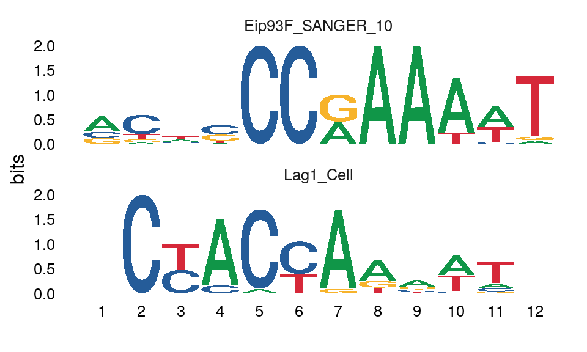

TomTom is a tool for comparing motifs to a known set of motifs. It takes as input a set of motifs and a database of known motifs to return a ranked list of the significance of the match between the input and known motifs. TomTom can be run using the runTomTom() function.
Accepted database formats
runTomTom() can accept a variety of inputs to use as the “known” motif database. The formats are as follows: - a path to a .meme format file (eg "fly_factor_survey.meme") - a list of universalmotifs - the output object from runDreme() - a list() of all the above. If entries are named, runTomTom() will use those names as the database identifier
Setting a default database
dremeR can be configured to use a default .meme format file as the query database, which it will use if the user does not provide a value to database when calling runTomTom(). The following locations will be searched in order.
- The
meme_dboption, defined usingoptions(meme_db = "path/to/database.meme") - The
MEME_DBenvironment variable defined in.Renviron
NOTE: if an invalid location is found at one option, runTomTom() will fall back to the next location if valid (eg if the meme_db option is set to an invalid file, but the MEME_DB environment variable is a valid file, the MEME_DB path will be used.
options(meme_db = system.file("extdata/db/fly_factor_survey_id.meme", package = "dremeR"))
Input types
To use TomTom on existing motifs, runTomTom() will accept any motifs in universalmotif format. The universalmotif package provides several utilities for importing data from various sources.
library(universalmotif) example_motif <- create_motif("CCRAAAW") runTomTom(example_motif)
runTomTom() can also take the output of runDreme as input. This allows users to easily discover denovo motifs, then match them to as set of known motifs. When run on the output of runDreme, all runTomTom() output columns will be appended to the runDreme() output data.frame, so no information will be lost.
output data
# This is a pre-build dataset packaged with dremeR # that mirrors running: # options(meme_db = system.file("inst/extdata/db/fly_factor_survey_id.meme", package = "dremeR")) # example_motif <- create_motif("CCRAAAW") # example_tomtom <- runTomTom(example_motif) data("example_tomtom")
When run using a universalmotif object as input, runTomTom returns the following columns:
names(example_tomtom) #> [1] "name" "altname" "family" #> [4] "organism" "consensus" "alphabet" #> [7] "strand" "icscore" "nsites" #> [10] "bkgsites" "pval" "qval" #> [13] "eval" "motif" "best_match_name" #> [16] "best_match_altname" "best_match_pvalue" "best_match_evalue" #> [19] "best_match_qvalue" "best_db_name" "best_match_motif" #> [22] "tomtom"
Columns preappended with best_ indicate the data corresponding to the best match to the motif listed in name.
The tomtom column is a special column which contains a nested data.frame of the rank-order list of TomTom hits for the motif listed in name.
names(example_tomtom$tomtom[[1]]) #> [1] "match_name" "match_altname" "match_pvalue" "match_evalue" #> [5] "match_qvalue" "db_name" "match_motif"
the best_match_motif column contains the universalmotif representation of the best match motif.
library(universalmotif) #> Registered S3 method overwritten by 'treeio': #> method from #> root.phylo ape view_motifs(example_tomtom$best_match_motif)

The match_motif column of tomtom contains the universalmotif format motif from the database corresponding to each match in descending order.
example_tomtom$tomtom[[1]]$match_motif[1:2] %>% view_motifs()

The drop_best_match() function drops all the best_match_* columns from the runTomTom() output.
example_tomtom %>% drop_best_match() %>% names #> [1] "name" "altname" "family" "organism" "consensus" "alphabet" #> [7] "strand" "icscore" "nsites" "bkgsites" "pval" "qval" #> [13] "eval" "motif" "tomtom"
To unnest the tomtom data.frame column, use tidyr::unnest(). The drop_best_match() function can be useful when doing this to clean up the unnested data.frame.
unnested <- example_tomtom %>% drop_best_match() %>% tidyr::unnest(tomtom) names(unnested) #> [1] "name" "altname" "family" "organism" #> [5] "consensus" "alphabet" "strand" "icscore" #> [9] "nsites" "bkgsites" "pval" "qval" #> [13] "eval" "motif" "match_name" "match_altname" #> [17] "match_pvalue" "match_evalue" "match_qvalue" "db_name" #> [21] "match_motif"
To re-nest the tomtom results, use nest_tomtom() (Note: that best_match_ columns will be automatically updated based on the rank-order of the tomtom data.frame)
unnested %>% nest_tomtom() %>% names #> [1] "name" "altname" "family" #> [4] "organism" "consensus" "alphabet" #> [7] "strand" "icscore" "nsites" #> [10] "bkgsites" "pval" "qval" #> [13] "eval" "motif" "best_match_name" #> [16] "best_match_altname" "best_match_pvalue" "best_match_evalue" #> [19] "best_match_qvalue" "best_match_motif" "best_db_name" #> [22] "tomtom"
Manipulating the assigned best match
While TomTom can be useful for limiting the search-space for potential true motif matches, often times the default “best match” is not the correct assignment. Users should use their domain-specific knowledge in conjunction with the data returned by TomTom to make this judgement (see below for more details). dremeR provides a few convenience functions for reassigning these values.
First, the update_best_match() function will update the values of the best_match* columns to reflect the values stored in the first row of the tomtom data.frame entry. This means that the rank of the tomtom data is meaningful, and users should only manipulate it if intending to create side-effects.
If the user can force motifs to contain a certain motif as their best match using the force_best_match() function. force_best_match() takes a named vector as input, where the name corresponds to the input motif name, and the value corresponds to a match_name found in the tomtom list data (NOTE: this means that users cannot force the best match to be a motif that TomTom did not return as a potential match).
For example, below the example motif could match either “Eip93F_SANGER_10”, or “Lag1_Cell”.
example_tomtom$tomtom[[1]] %>% head(3) #> match_name match_altname match_pvalue match_evalue match_qvalue #> 1 Eip93F_SANGER_10 FBgn0013948 6.29e-07 0.000382 0.000765 #> 2 Lag1_Cell FBgn0040918 1.67e-03 1.010000 0.791000 #> 3 pho_SOLEXA_5 FBgn0002521_3 2.28e-03 1.390000 0.791000 #> db_name #> 1 fly_factor_survey_id #> 2 fly_factor_survey_id #> 3 fly_factor_survey_id #> match_motif #> 1 <S4 class 'universalmotif' [package "universalmotif"] with 20 slots> #> 2 <S4 class 'universalmotif' [package "universalmotif"] with 20 slots> #> 3 <S4 class 'universalmotif' [package "universalmotif"] with 20 slots>
The current best match is listed as “Eip93F_SANGER_10”.
example_tomtom %>% dplyr::select(name, best_match_name) #> name best_match_name #> 1 example_motif Eip93F_SANGER_10
To force “example_motif” to have the best match as “Lag1_Cell”, do the following:
example_tomtom %>% # multiple motifs can be updated at a time by passing additional name-value pairs. force_best_match(c("example_motif" = "Lag1_Cell")) %>% dplyr::select(name, best_match_name) #> name best_match_name #> 1 example_motif Lag1_Cell
Visualize data
view_tomtom_hits() can be used to compare the hits from tomtom to each input motif. Hits are shown in descending order by rank. By default, all hits are shown, or the user can pass an integer to top_n to view the top number of motifs. This can be a useful plot for determining which of the matches appear to be the “best” hit.
For example, it appears that indeed “Eip93F_SANGER_10” is the best of the top 3 hits, as most of the matching sequences in the “Lag1_Cell” and “pho_SOLEXA_5” motifs correspond to low information-content regions of the matched motifs.
example_tomtom %>% view_tomtom_hits(top_n = 3) #> [[1]]
Importing previous data
importTomTomXML() can be used to import a tomtom.xml file from a previous run on the MEME server or on the commandline. Details for how to save data from the TomTom webserver are below.
Saving data from TomTom Web Server
To download XML data from the MEME Server, right-click the TomTom XML output link and “Save Target As” or “Save Link As” (see example image below), and save as <filename>.xml. This file can be read using importTomTomXML()
Citation
dremeR is a wrapper for a select few tools from the MEME Suite, which were developed by another group. In addition to citing dremeR, please cite the MEME Suite tools corresponding to the tools you use.
If you use runTomTom() in your analysis, please cite:
Shobhit Gupta, JA Stamatoyannopolous, Timothy Bailey and William Stafford Noble, “Quantifying similarity between motifs”, Genome Biology, 8(2):R24, 2007. full text